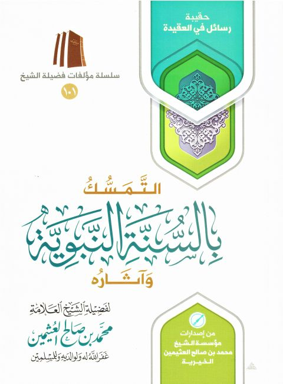

Downloads need an internet connection.
التمسك بالسنة النبوية وآثاره
Authors: محمد بن صالح العثيمين
Publishers: مؤسسة الشيخ محمد بن صالح العثيمين الخيرية
▫️ العنوان: التمسك بالسنة النبوية وآثاره ▪️ المؤلف: #محمد_بن_صالح_بن_عثيمين ▫️ الناشر: #مؤسسة_الشيخ_محمد_بن_صالح_العثيمين_الخيرية ▪️ تاريخ النشر: 1436هـ 2015م ▫️ بلد النشر: القصيم، #السعودية ▪️ الطبعة: 5 ▫️ عدد الأجزاء: 1 ▪️ الصفحات: 65 ▫️ نوع الوعاء: #كتاب ▪️ التصنيف الرئيسي: #العقيدة_والمذاهب_والأديان ۪